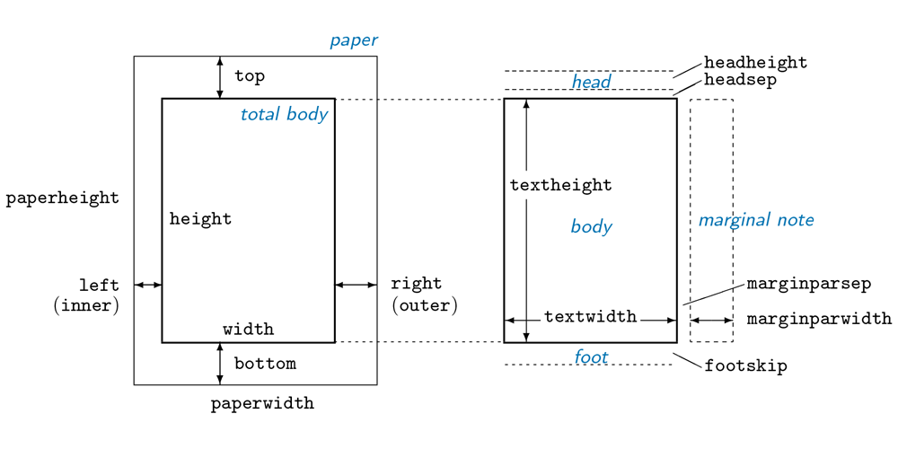
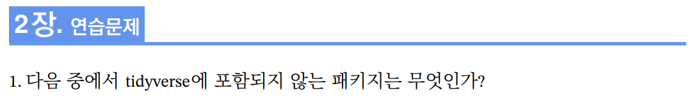
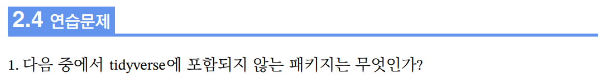
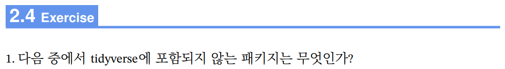
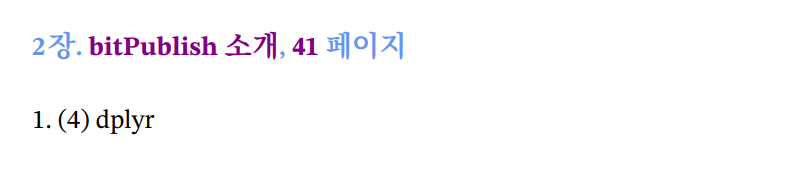
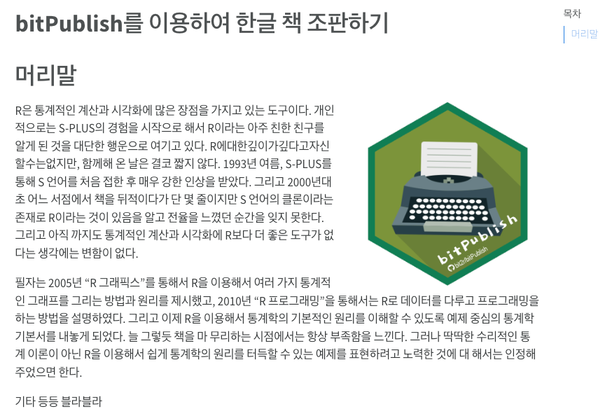

학습 목표
bitPublish가 제공하는 기능을 이해하고, bitPublish을 이용해서 원하는 책을 저작할 수 있다.
이 장에서는 `bitPublish’의 활용을 위한 특장점과 기능을 소개합니다.
bitPublish가 제공하는 기능을 이해하고, bitPublish을 이용해서 원하는 책을 저작할 수 있다.
Quarto(posit 2023b)는 오픈 소스의 과학 및 기술 출판 시스템으로 다음과 같은 기능을 제공합니다.1
Jupyter 노트북, RStudio를 사용하거나 선호하는 편집기로 마크다운 문서를 작성합니다.Python, R, Julia 및 Observable을 사용하여 동적 콘텐츠를 만듭니다.HTML, PDF, MS Word, ePub 등으로 재현 가능한 프로덕션 품질의 기사, 프리젠테이션, 웹 사이트, 블로그 및 책을 게시합니다.Posit Connect, Confluence 또는 기타 게시 시스템에 게시하여 조직 전체에서 지식과 통찰력을 공유합니다.팬독 마크다운을 사용하여 작성합니다.Quarto(Horst 2022)를 요약하자면 그림 2.1처럼, Quarto 문서를 knitr 또는 jupyter로, 마크다운(Markdown) 문서로 랜더링한 다음 팬독(Pandoc)에 의해 마크다운 문서를 HTML, PDF 또는 Word 문서를 비롯한 여러 출력 포맷으로 변환해주는 시스템입니다.

extensions은 Quarto의 동작을 수정하고 확장할 수 있는 방법을 제공하며, 다음과 같은 유형으로 구분합니다.(posit 2023a)
| 영문 유형 | 국문 유형 | 설명 |
|---|---|---|
| Shortcodes | 단축 코드 | 다양한 유형의 콘텐츠를 생성하는 특수 마크다운 지시문. 예를 들어 짧은 코드를 만들어 문서에 트윗이나 동영상을 삽입 |
| Filters | 필터 | 새로운 전역 동작 또는 새로운 마크다운 렌더링 동작을 도입하기 위한 도구. 예를 들어 출력 접기, 이미지 슬라이더 등의 필터 제작 |
| Journal Articles | 저널 기사 | 마크다운으로 전문적인 저널 기사를 작성. LaTeX(PDF) 및 HTML 버전을 모두 생성할 수 있음 |
| Custom Formats | 맞춤 형식 | 문서 옵션, 템플릿, 스타일시트 및 기타 콘텐츠를 함께 묶어 새로운 출력 형식을 생성 |
| Revealjs Plugins | Revealjs 플러그인 | Revealjs로 만든 HTML 프레젠테이션의 기능을 확장 |
| Project Types | 프로젝트 유형 | 표준 콘텐츠와 옵션을 함께 묶는 새로운 프로젝트 유형을 만들거나, 사용자 지정 HTML 형식으로 웹 사이트 제작 |
| Starter Templates | 시작 템플릿 | 템플릿과 예제 콘텐츠를 제공하여 사용자가 새 프로젝트를 시작할 수 있도록 지원 |
bitPublish는 Quarto extensions로 R 기반으로 한글 책을 저작해 줍니다. 또한 한글 책 저작을 위한 예제 콘텐츠를 제공합니다. 그러므로 extensions 분류 상으로는 맞춤 형식, 시작 템플릿으로 분류할 수 있습니다.
Quarto를 이용해서 책으로 만들 수 있는 포맷에는 HTML, PDF, MS Word, EPUB, AsciiDoc이 있습니다. bitPublish는 이중에서 PDF 포맷의 책을 생성합니다.
현재 bitPublish의 기본 설정에서는 4 배판 판형을, 갖는 영어를 포함한 라틴계열 언어와 한국어, 중국어를 혼용한 책을 저작할 수 있습니다.
현재 bitPublish의 기본 페이지 레이아웃 설정은 4 배판으로 설계되었습니다. 4 배판 판형은 용지의 크기가 188mm254mm입니다. 이 용지의 크기는 B5 사이즈이고 우리가 일반적으로 프린터 용지로 사용하는 A4 사이즈는 국배판이라하며, 용지의 크기가 210mm217mm입니다.
4 배판 판형의 레이아웃 설정을 변경하려면, _extensions/bit2r/bitPublish/_extension.yml 파일의 다음 행들을 수정합니다. 이 설정은 LaTeX의 geometry 패키지가 사용하는 레이아웃 설정 파라미터입니다.
geometry: # 4x6 배판 도서를 위한 설정
### 이하 재단선이 없는 조판
# - paper=b5paper
- paperheight=257mm
- paperwidth=188mm
- top=25mm
- headsep=10mm
- bottom=30mm
- footskip=15mm
- left=25mm
- right=25mm
- centering
### 이하 재단선을 넣는 조판
# - paper=a4paper
# - layoutwidth=190mm
# - layoutheight=260mm
# - layouthoffset=10mm
# - layoutvoffset=18.5mm
# - showcrop
# - top=20mm
# - headsep=10mm
# - bottom=30mm
# - footskip=15mm
# - left=25mm
# - right=25mm
# - centering 일반적으로 저작을 위해서는 프린터로 출력해서 이상여부를 확인하는 작업을 거치게 됩니다. 대중적으로 사용되는 A4 사이즈의 프린터 용지는 4 배판보다 크기 때문에, 출력은 A4 사이즈에 출력하지만 실제로 만들어질 재단선(crop) 마크를 출력해서 4 배판 판형을 표시하기도 합니다. 앞의 geometry 패키지의 판형 설정 영역에서 주석으로 처리되는 영역이, A4 용지를 사용하는 경우를 예시한 것입니다.
종이 출판을 위해서 원고를 넘길 때, 재단선이 없는 실제 4 배판 크기의 결과를 요구하기도 합니다. 이 경우에는 앞의 geometry 패키지의 판형 설정 영역에서 주석처리 되지 않은 영역을 사용합니다.
여기서 중요한 것은, 국배판 \(=\) A4, 4 배판 \(\approx\) B5의 관계2라는 점입니다. 그래서 geometry 설정에서 paper 설정이 아니라, paperheight, paperwidth를 사용했습니다.
그리고 물리적인 용지 크기와 판형의 크기가 동일하기 때문에 재단선 출력을 설정하는 showcrop을 설정하지 않았습니다.
geometry 패키지의 페이지 설정 파라미터는 그림 2.2같습니다. 머리글과 바탕글 위치는 각각 head와 foot입니다. 그러므로 설정 시에는 top보다 headsep이 작아야 하고, bottom보다 footskip이 작아야 합니다. 즉, top 영역 안에 headsep이 포함되고, bottom 영역 안에 footskip이 포함되기 때문입니다.
출판 저작물을 생성하는 저자는, 현재 bitPublish의 기본 페이지 레이아웃을 참고해서 레이아웃을 정의하기 바랍니다.

bitPublish는 전자책이 아닌 종이에 출력되는 책의 저작을 목적으로 만들어졌기 때문에, 폰트의 선택에서 TTF(True Type Font)가 아닌 OTF(Open Type Font)를 선택하였습니다.
모든 폰트는 _extensions/bit2r/bitPublish/fonts 디렉토리에 위치합니다. 그래서 따로 설치할 필요도 없고, 이미 설치된 폰트도 중복으로 위치하게 됩니다. 그리고 KoPubWorld바탕체_Pro와 KoPubWorld돋움체_Pro 폰트를 사용하기 위해서는 한국출판인회의 홈페이지인 https://forms.gle/aQU7b3EoaF53zMKaA에 사용자 정보를 등록 후 무료로 사용하실 수 있습니다. 이 경우에는 https://www.kopus.org/wp-content/uploads/2021/04/서체_라이센스.pdf 페이지의 라이센스를 일독하시기 바랍니다.
머리글(header)과 바닥글(footer)는 fancyhdr 패키지를 사용해서 정의하였습니다.
_extensions/bit2r/bitPublish/_extension.yml 파일에 다음과 같이 설정되어 있습니다.
\usepackage{fancyhdr}
\pagestyle{fancy}
중간 생략
\fancyhf{}
\fancyhead[EL]{\changesize \numberfont --- bitPublish를 이용하여}
\fancyhead[OR]{\changesize \numberfont 한글 책 조판하기 ---}
\fancyfoot[EL]{{\pagefont\thepage}{\hskip4mm}{\changesize \leftmark}}
\fancyfoot[OR]{{\changesize \rightmark}{\hskip4mm}{\pagefont\thepage}}만약에 머리글과 바닥글의 모양을 바꾸려면 직접 LaTeX 스크립트를 수정하면 됩니다. 책의 제목을 바꾸기 위해서는 fancyhead의 EL과 OR을 변경하면 됩니다.
줄간격, 행간 등으로 부르는 글줄 사이(line spacing)는 1.5로 설정되었습니다. 수정이 필요하다면, _extensions/bit2r/bitPublish/bitPublish.tex 파일의 다음 행을 수정합니다.
%% 줄간격 정의
\linespread{1.5}bitPublish는 본문에서 예제, 연습문제, 주의, 정보, 인용 등을 표현할 수 있는 여러 LaTeX 서식을 지원합니다. 이 서식은 다음과 같은 구조의 LaTeX 환경(enviroment)으로 제공합니다.
\begin{enviroment name}[optional argument]{main argument}
text of enviroment
\end{enviroment name}또한 다음과 같은 LaTeX 명령(command)으로도 제공합니다.
\command name[optional argument]{main argument} bitPublish 서식은 전자출판이 아닌, 종이로 된 서책의 출판을 염두에 둔 것이라서 LaTeX을 기반으로 서식을 정의합니다. 그러나 이 경우에는 종이 서책 출판을 위한 PDF 포맷은 지원하지만 전자책 위한 HTML 포맷을 지원하지 못하는 단점이 있습니다.
bitPublish 초기 버전에서 대부분의 서식은 LaTeX 출력을 지원하지만, 전자책을 위한 HTML 출력도 동시에 지원하는 멀티 아웃 포맷(multiple output formats)으로 업그레이드하려 합니다.
bitPublish 서식의 대표적인 것에 커스텀 블록(custom blocks)(Yihui Xie 2022)이 있습니다. 사용자 정의 블록은 보고서나 책의 일부 콘텐츠를 블록으로 정의하여 본문보다 돋보이게 하여 독자가 핵심 포인트를 쉽게 이해할 수 있도록 주목도를 높이는 서식입니다.
사용자 정의 블록은 팬독의 fenced Div blocks 기능을 사용합니다. 이 기능은 Div 블록을 HTML과 LaTeX 모두로 변환해줍니다.
다음의 팬독 사용자 정의 블록은,
::: {.verbatim data-latex=""}
We show some _verbatim_ text here.
:::LaTeX 출력일 경우에는 다음과 같이 변환하고,
\begin{verbatim}
We show some \emph{verbatim} text here.
\end{verbatim}HTML 출력일 경우에는 다음과 같이 변환해 줍니다.
<div class="verbatim">
We show some <em>verbatim</em> text here.
</div>정보 블록은 멀티 아웃 포맷을 지원하는데, 다음과 같은 네 개의 유형을 지원합니다. 네 개의 유형은 HTML과 LaTeX에서 우주 똑같은 모양은 아니지만, 거의 유사한 모습으로 출력됩니다.
멀티 아웃 포맷을 지원하기 위한 팬독 사용자 정의 블록의 구문은 다음과 같습니다. 그리고 정보 블록에 들어갈 내용은 마크다운 문법으로 기술해야 합니다.
::: {.infobox .<type> data-latex="{<type>}{<title>}"}
text of infobox
:::본문에서 서술하는 것보다 유용한 정보를 기술하는 데 사용하는 정보(information) 블록 블록은 다음처럼 사용합니다.
블록 청크의 옵션 중에 data-latex는 LaTeX에 전달하는 인수입니다. 정보(information)를 의미하는 .information와 {information}가 중복으로 기술된 것은, 멀티 아웃 포맷을 위한 것이므로 반드시 이 형식을 따라야 합니다.
::: {.infobox .information data-latex="{information}{information의 용도}"}
information은 독자에게 전하고 싶은 정보나 아이디어를 기술하는 데 사용합니다.
짙은 회색 테두리에 정보를 나타내는 아이콘을 배치하여 주위를 환기시킵니다.
환경의 내부에는 **Markdown**으로 문장을 기술합니다.
:::information은 독자에게 전하고 싶은 정보나 아이디어를 기술하는 데 사용합니다. 짙은 회색 테두리에 정보를 나타내는 아이콘을 배치하여 주위를 환기시킵니다. 환경의 내부에는 Markdown으로 문장을 기술합니다.
다음은 정보 블록에서 제목을 생략한 예제입니다.
::: {.infobox .information data-latex="{information}{}"}
information은 독자에게 전하고 싶은 정보나 아이디어를 기술하는 데 사용합니다.
짙은 회색 테두리에 정보를 나타내는 아이콘을 배치하여 주위를 환기시킵니다.
환경의 내부에는 **Markdown**으로 문장을 기술합니다.
:::information은 독자에게 전하고 싶은 정보나 아이디어를 기술하는 데 사용합니다. 짙은 회색 테두리에 정보를 나타내는 아이콘을 배치하여 주위를 환기시킵니다. 환경의 내부에는 Markdown으로 문장을 기술합니다..
infobox를 팬독 블록으로 정의할 경우 HTML에서는 제목이 출력되지 않는 버그5가 있습니다. 이 경우에는 다음처럼 기술하면 재목이 출력되는 멀티 아웃 포맷이 가능합니다. 즉, 본문에서 제목을 표현하는 방법입니다.
::: {.infobox .information data-latex="{information}{}"}
**information의 용도**
information은 독자에게 전하고 싶은 정보나 아이디어를 기술하는 데 사용합니다.
짙은 회색 테두리에 정보를 나타내는 아이콘을 배치하여 주위를 환기시킵니다.
환경의 내부에는 **Markdown**으로 문장을 기술합니다.
:::information의 용도
information은 독자에게 전하고 싶은 정보나 아이디어를 기술하는 데 사용합니다. 짙은 회색 테두리에 정보를 나타내는 아이콘을 배치하여 주위를 환기시킵니다. 환경의 내부에는 Markdown으로 문장을 기술합니다.
또 하나의 방법은 bitPublish가 제공하는 사용자 정의 R 함수 custom_block()를 사용하는 방법이 있습니다.
custom_block(msg, type, title)이 방법도 멀티 아웃 포맷을 지원합니다. 다음과 같은 knitr 청크를 이용합니다.
```{r}
#| echo: false
#| results: asis
custom_block("
**information**은 본문에서 서술하는 것보다 **유용한 정보**를 기술하는 데 사용합니다.
파란색 테두리와 정보를 나타내는 아이콘을 배치하여 주위를 환기시킵니다.
블록 내부를 채울 텍스트는 **Markdown 문법**으로 기술합니다.
", title = "information의 용도", type = "information")
```information의 용도
information은 본문에서 서술하는 것보다 유용한 정보를 기술하는 데 사용합니다. 파란색 테두리와 정보를 나타내는 아이콘을 배치하여 주위를 환기시킵니다. 블록 내부를 채울 텍스트는 Markdown 문법으로 기술합니다.
사용자 정의 함수인 custom_block()를 사용하기 위해서는 사전에 다음처럼 init_environments.R 파일을 로드해야 합니다.
```{r}
#| label: init
#| include: false
source(here::here("_extensions", "bit2r", "bitPublish", "init_environments.R"))
```당부하고 싶은 주의사항을 기술하는 데 사용하는 주의(caution) 블록은 다음처럼 사용합니다.
::: {.infobox .caution data-latex="{caution}{}"}
**caution의 용도**
**caution**은 당부하고 싶은 **주의사항**을 기술하는 데 사용합니다.
주황색 테두리에 주의를 나타내는 아이콘을 배치하여 주위를 환기시킵니다.
블록 내부를 채울 텍스트는 **Markdown 문법**으로 기술합니다.
:::caution의 용도
caution은 당부하고 싶은 주의사항을 기술하는 데 사용합니다. 주황색 테두리에 주의를 나타내는 아이콘을 배치하여 주위를 환기시킵니다. 블록 내부를 채울 텍스트는 Markdown 문법으로 기술합니다.
주의사항보다 더 치명적인 문제를 야기할 경고를 기술하는 데 사용하는 경고(warning) 블록은 다음처럼 사용합니다.
::: {.infobox .warning data-latex="{warning}{}"}
**warning의 용도**
**warning**은 주의사항보다 더 치명적인 문제를 야기할 **경고**를 기술하는 데 사용합니다.
붉은색 테두리에 폭탄을 표현한 아이콘을 배치하여 주위를 환기시킵니다.
블록 내부를 채울 텍스트는 **Markdown 문법**으로 기술합니다.
:::warning의 용도
warning은 주의사항보다 더 치명적인 문제를 야기할 경고를 기술하는 데 사용합니다. 붉은색 테두리에 폭탄을 표현한 아이콘을 배치하여 주위를 환기시킵니다. 블록 내부를 채울 텍스트는 Markdown 문법으로 기술합니다.
유용하게 사용할 수 있는 아이디어나 비법을 설명하는 데 사용하는 팁(tip) 블록은 다음처럼 사용합니다.
::: {.infobox .tip data-latex="{tip}{}"}
**tip의 용도**
**tip**은 유용하게 사용할 수 있는 **아이디어나 비법**을 기술하는 데 사용합니다.
초록색 테두리에 아이디어를 나타내는 전구 아이콘을 배치하여 주위를 환기시킵니다.
블록 내부를 채울 텍스트는 **Markdown 문법**으로 기술합니다.
:::tip의 용도
tip은 유용하게 사용할 수 있는 아이디어나 비법을 기술하는 데 사용합니다. 초록색 테두리에 아이디어를 나타내는 전구 아이콘을 배치하여 주위를 환기시킵니다. 블록 내부를 채울 텍스트는 Markdown 문법으로 기술합니다.
이야기 블록은 저자가 독자에게 강조해서 하고 싶은 이야기나, 명사의 명언을 인용하여 이야기할 때 사용하는 블록으로 멀티 아웃 포맷을 지원합니다.
PDF 문서로만 저작할 경우에 사용하는데, shadequote 환경을 이용합니다. 이야기 블록 구문은 다음과 같습니다.
\begin{shadequote}[<alignment>]{<author>}
text of quote
\end{shadequote}다음처럼 괄호를 비우면, 저자의 이야기를 표시합니다.
\begin{shadequote}{}
통상적으로 많은 사람들은 `수준을 등급의 높고 낮음을 의미하는 가치의 척도'로
인식하고 있다. 그러나 통계학계에서는 levels을 수준으로 직역하여 사용해 왔다.
혼동스럽다면, \textbf{수준을 범주형 데이터의 범주로 이해}하기 바란다.
\end{shadequote}명사의 명언을 인용하여 이야기할 경우에는 화자의 이름을 첫째 괄호에 기입합니다. 이 예제는 화자의 이름을 오른쪽 정렬하였습니다. 정렬은 l, c, r로 표기합니다. 각각 왼쪽, 가운데, 오른쪽 정렬을 의미합니다.
\begin{shadequote}[r]{안창호}
진실은 반드시 따르는 자가 있고, 정의는 반드시 이루는 날이 있다.
\end{shadequote}HTML 문서로만 저작할 경우에 사용하는데, blockquote 태그를 이용합니다. 이야기 블록 구문은 다음과 같습니다.
<blockquote class="otro-blockquote">
text of quote
<span>author</span>
</blockquote>다음과 같이 기술하며, 화자의 이름의 정렬을 지원하지 않습니다. 왼쪽 정렬로 출력됩니다.
<blockquote class="otro-blockquote">
진실은 반드시 따르는 자가 있고, 정의는 반드시 이루는 날이 있다.
<span>안창호</span>
</blockquote>진실은 반드시 따르는 자가 있고, 정의는 반드시 이루는 날이 있다. 안창호
멀티 아웃 포맷을 지원하는 구문은 다음과 같습니다. align은 PDF 저작에서만 동작합니다.
```{r}
#| echo: false
#| results: asis
quote_block("
text of quote
", speaker = author, align = align)
```앞의 안창호 선생님의 명언을 이용하는 방법은 다음과 같습니다.
```{r}
#| echo: false
#| results: asis
quote_block("진실은 반드시 따르는 자가 있고, 정의는 반드시 이루는 날이 있다.",
speaker = "안창호", align = "right")
```진실은 반드시 따르는 자가 있고, 정의는 반드시 이루는 날이 있다. 안창호
저자의 이야기는 다음처럼 표현합니다.
```{r}
#| echo: false
#| results: asis
quote_block("통상적으로 많은 사람들은 '수준을 등급의 높고 낮음을 의미하는 가치의
척도'로 인식하고 있다. 그러나 통계학계에서는 levels을 수준으로 직역하여 사용해 왔다.
혼동스럽다면, 수준을 범주형 데이터의 범주로 이해하기 바란다.")
```통상적으로 많은 사람들은 ’수준을 등급의 높고 낮음을 의미하는 가치의 척도’로 인식하고 있다. 그러나 통계학계에서는 levels을 수준으로 직역하여 사용해 왔다. 혼동스럽다면, 수준을 범주형 데이터의 범주로 이해하기 바란다.
앞의 예제에서 `학습목표’를 정의한 블록 서식을 타이틀 박스라 부르겠습니다. 여러 용도로 사용될 수 있어 목적으로 이름을 특정할 수 없기 때문입니다. 학습 시나리오, 학습의 목표, 뭐든 상관없습니다.
타이틀 박스도 멀티 아웃 포맷을 지원합니다.
PDF 문서로만 저작할 경우에 사용하는데, titlebox 명령을 이용합니다. 타이틀 박스 블록 명령은 다음과 같으며, 블록의 내부를 채울 색상 테마를 지정합니다.
\titlebox}{text of title}{color theme}{text of box}다음은 학습목표를 설명하는 용도로 타이틀 박스 블록을 사용한 예제입니다.
\titlebox{학습 목표}{Cbluejeans}{bitPublish가 제공하는 기능을 이해하고,
bitPublish을 이용해서 원하는 책을 저작할 수 있다.}`Cbluejeans’는 색상을 지정하기 위한 컬러입니다. 프리엠블에서 미리 지정해 놓은 컬러에는 다음과 같은 것을 사용할 수 있습니다. 이름과 이름에 해당하는 RGB값입니다.
HTML 문서로만 저작할 경우에 사용하는데, titlebox 태그를 이용합니다. 타이틀 박스 블록 구문은 다음과 같습니다.
<titlebox class="color theme 클래스">
<h4><span class="color of title">text of title</span></h4>
<p>text of box</p>
</titlebox>다음과 같이 기술하며, 타이틀 색상과 블록의 테두리를 채울 색상 테마를 지정합니다.
<titlebox class="bluejeans">
<h4><span class="Cbluejeans">학습목표</span></h4>
<p>bitPublish가 제공하는 기능을 이해하고, bitPublish을 이용해서 원하는 책을
저작할 수 있다.</p>
</titlebox> bitPublish가 제공하는 기능을 이해하고, bitPublish을 이용해서 원하는 책을 저작할 수 있다.
멀티 아웃 포맷을 지원하는 구문은 다음과 같습니다. theme 인수로 HTML과 PDF에서의 타이클 박스 블록의 색상을 정의합니다. 그러나 블록의 모양과 색상의 표현은 두 포맷에서 상이합니다.
```{r}
#| echo: false
#| results: asis
titlebox_block("text of box", title = "text of title", theme = "color theme")
```앞의 학습 목표 예제는 다음과 같이 기술합니다.
```{r}
#| echo: false
#| results: asis
titlebox_block("bitPublish가 제공하는 기능을 이해하고, bitPublish을 이용해서 원하는
책을 저작할 수 있다.", title = "학습목표", theme = "bluejeans")
```bitPublish가 제공하는 기능을 이해하고, bitPublish을 이용해서 원하는 책을 저작할 수 있다.
색상과 타이블 제목을 바꿔봅니다.
```{r}
#| echo: false
#| results: asis
titlebox_block("bitPublish가 제공하는 기능을 이해하고, bitPublish을 이용해서 원하는
책을 저작할 수 있다.", title = "이 장을 마치면", theme = "lavander")
```bitPublish가 제공하는 기능을 이해하고, bitPublish을 이용해서 원하는 책을 저작할 수 있다.
Quarto에서 제공하는 정리(theorems)의 변형을 이용합니다. 이 방법은 아주 심플하고 멀티 아웃 포맷과 크로스-레퍼런스까지 지원합니다. 다만 이전에 LaTeX으로 구현한 서식이 있는 블록보다 너무 평범해서 본문에서 두드러지지는 않습니다. 그러나 문법이 쉽고 불필요한 카운터의 정의가 필요없기 때문에, bitPublish는 이 방법을 표준으로 정했습니다.
다음과 같이 사용합니다.
#exr-label은 예제를 알려주는 지시자이면서,
title of exercise는 예제의 타이틀입니다.
text of exercise는 예제의 본문입니다.::: {#exr-label}
### title of exercise
text of exercise
:::라벨 접두어
예제가 정상적으로 동작하기 위해서는 라벨을 정의할 때, 반드시 접두어 exr-을 사용해야 합니다.
다음은 타이틀을 포함한 예제입니다.
::: {#exr-bitformat}
### bitPublish 서식 예제
bitPublish의 서식 중에서 예제, 연습문제, 주의, 정보, 인용을 만들어 보아라.
:::예제 2.1 (bitPublish 서식 예제) bitPublish의 서식 중에서 예제, 연습문제, 주의, 정보, 인용을 만들어 보아라.
다음은 타이틀을 제외한 예제입니다.
::: {#exr-bitformat2}
bitPublish의 서식 중에서 예제, 연습문제, 주의, 정보, 인용을 만들어 보아라.
:::예제 2.2 bitPublish의 서식 중에서 예제, 연습문제, 주의, 정보, 인용을 만들어 보아라.
라벨을 레퍼런스하는 방법은 다음과 같습니다.
[@exr-bitformat]에서 연습한 bitPublish의 서식은 반드시 숙지하시기 바랍니다.예제 2.1에서 연습한 bitPublish의 서식은 반드시 숙지하시기 바랍니다.
연습문제는 현재 멀티 아웃 포맷을 지원하지 않습니다. PDF 아웃 포맷만 지원하기 때문에, 어느정도 LaTeX애 대한 지식이 필요합니다.
기술서나 학습서의 경우에는 연습문제를 제공하는 경우가 많습니다. bitPublish에서 연습문제 서식은 Exercise 환경을 이용합니다.
\begin{Exercise}
text of exercise
\end{Exercise}또한 연습문제의 해답 서식은 Answer 환경을 이용합니다.
\begin{Answer}
text of answer
\end{Answer}또한 연습문제의 내용을 위해서 tasks 환경과 task 명령을 사용할 수 있습니다. 4지선다형의 객관식에 유용하게 사용할 수 있습니다.
다음 예제는 4지선다형의 객관식 문제의 예시입니다. 각 문항은 아라비아 숫자로 표현하게 됩니다.
\noindent 1. 다음 중에서 tidyverse에 포함되지 않는 패키지는 무엇인가?
\begin{tasks}[label=(\arabic*)](1)
\task dplyr
\task ggplot2
\task tidyr
\task dlookr
\end{tasks}이 LaTeX 스크립트는 다음과 같이 조판됩니다.
연습문제나 연습문제의 해답에 R 스크립트와 같은 프로그램 코드를 사용할 수 있습니다. 이 경우에는 Verbatim 환경을 사용하면 좋습니다.
다음 예제는 간단한 R 스크립트로 글자 색상이나 크기를 지정할 수 있습니다.
\begin{Verbatim}[fontsize=\small,formatcom=\color{black}]
if(!require("ragg")){
install.packages("ragg")
library("ragg")
}
\end{Verbatim}이 LaTeX 스크립트는 다음과 같이 조판됩니다.
연습문제는 다음과 같이 두 가지 설정을 사용자가 선택할 수 있습니다.
다음은 헤더의 넘버링을 장에 여러 번 연습문제를 사용하는 예시입니다. chapterexerlevel의 값을 false로 지정했기 때문입니다. 만약 이 값을 true로 지정하면 장에 한 번의 연습문제를 사용하는 형식이 됩니다.
Exercise 환경에서 label은 반드시 지정해야 합니다. 이 라벨은 연습문제의 해답 페이지에 연습문제가 있는 페이지로 하이퍼링크를 생성할 때 크로스-레퍼런스로 사용됩니다. 이 예제에서는 label을 exerbitpublish로 지정했습니다.
\setboolean{chapterexerlevel}{false}
\begin{Exercise}[label={exerbitpublish}, name={Exercise}]
text of exercise
\end{Exercise}chapterexerlevel의 값이 true인 연습문제 헤더의 넘버링은 그림 2.3같이 출력됩니다.

chapterexerlevel의 값이 false인 연습문제 헤더의 넘버링은 그림 2.4같이 출력됩니다.

다음은 헤더의 이름을 Exercise로 지정하는 예시로 그림 2.5같이 출력됩니다.
\setboolean{chapterexerlevel}{false}
\begin{Exercise}[label={exerbitpublish}, name={Exercise}]
text of exercise
\end{Exercise}
연습문제는 다음과 같이 세 가지를 설정해야 합니다.
firstanswerofthechapter을 true 혹은 false로 설정true이면 장 정보를 출력하고,false이면 장 정보를 출력하지 않는다.AnswerChapter 명령에 해당 장의 라벨을 설정해줌ref 인수에 라벨정보 할당다음은 연습문제 헤더 정보에 장의 정보를 출력합니다. firstanswerofthechapter의 값을 true로 지정했기 때문입니다. 만약 이 값을 false로 지정하면 장 정보를 출력하지 않고 해답을 출력해 줍니다. 중요한 것은 Answer 환경이 끝난 위치에 firstanswerofthechapter의 값을 false로 초기화해야 한다는 것입니다.
또한 AnswerChapter 명령에는 연습문제가 포함된 장의 라벨인 sec-bitpublish를 지정했습니다.
Answer 환경에서 label은 반드시 지정해야 합니다. 이 라벨은 연습문제의 해답 페이지에 연습문제가 있는 페이지로 하이퍼링크를 생성할 때 크로스-레퍼런스로 사용됩니다. 이 예제에서는 label을 exerbitpublish로 지정했습니다.
\renewcommand{\AnswerChapter}{\nameref{sec-bitpublish}}
\setboolean{firstanswerofthechapter}{true}
\begin{Answer}[ref={exerbitpublish}]
text of answer
\end{Answer}
\setboolean{firstanswerofthechapter}{false}위와 같은 설정은 연습문제 해답의 헤더 부분에 그림 2.6같은 정보를 표현해 줍니다. 보라색의 정보가 크로스-레퍼런스로 연결된 하이퍼 링크입니다. bitPublish 소개'를 클릭하면 장 제목이 있는 2장의 첫 페이지로 이동하고,41’을 클릭하면 해당 연습문제가 있는 41 페이지로 이동하게 됩니다.

이상을 종합하여 다음과 같은 연습문제와 연습문제 해답을 기술하였습니다. 연습문제는 현재 위치에 출력되고, 연습문제 해답은 5장 연습문제 풀이에 출력됩니다.
\setboolean{chapterexerlevel}{false}
\begin{Exercise}[label={exerbitpublish}]
\noindent 1. 다음 중에서 tidyverse에 포함되지 않는 패키지는 무엇인가?
\begin{tasks}[label=(\arabic*)](1)
\task dplyr
\task ggplot2
\task tidyr
\task dlookr
\end{tasks}
\noindent 2. 다음의 데이터 객체를 외부 파일로 출력해 보아라.
\begin{Verbatim}[fontsize=\small,formatcom=\color{black}]
if(!require("ragg")){
install.packages("ragg")
library("ragg")
}
\end{Verbatim}
\noindent 3. ggplot2 패키지의 diamonds 데이터셋으로 dplyr을 이용해서 다음 과정으로 계산하고 시각화 하여라.
\begin{tasks}[label=(\arabic*)](1)
\task cut과 color별로 평균 가격과 평균 캐럿을 계산한 후 평균 가격의 내림차순으로 정렬하라.
\task (1)의 결과로 평균 가격과 평균 캐럿의 상관계수를 구하라.
\task (1)의 결과로 평균 가격과 평균 캐럿의 산점도를 시각화하라. 이 때, cut별로 색상을 구분하라.
\end{tasks}
\end{Exercise}
\renewcommand{\AnswerChapter}{\nameref{sec-bitpublish}}
\setboolean{firstanswerofthechapter}{true}
\begin{Answer}[ref={exerbitpublish}]
\noindent 1. (4) dplyr
\noindent 2. ragg 패키지가 없으면, 패키지를 설치한다. 그리고 ragg 패키지를 로드한다.
\noindent 3.
\begin{Verbatim}[fontsize=\small,formatcom=\color{black}]
# (1)
library(tidyverse)
agg_diamonds <- diamonds |>
group_by(cut, color) |>
summarise(mean_price = mean(price),
mean_carat = mean(carat),
.groups = "drop") |>
arrange(desc(mean_price))
agg_diamonds
# (2)
agg_diamonds |>
(function(x) cor(x$mean_price, x$mean_carat))()
# (3)
agg_diamonds |>
ggplot(aes(x = mean_price, y = mean_carat, color = cut)) +
geom_point() +
labs(title = "Relation of price and carat",
subtitle = "by cut class",
x = "price", y = "carat")
\end{Verbatim}
\end{Answer}
\setboolean{firstanswerofthechapter}{false}연습문제 해답을 출력하기 위해서는 출력하고자 하는 위치에 shipoutAnswer 명령을 기술해야 합니다.
본 예제 문서에서는 다음 정보를 chap_solve_exercise.qmd 파일에 기술했습니다.
# 연습문제 풀이 {#sec-solve}
\shipoutAnswer그리고 설정 파일인 _quarto.yml 파일에 다음과 같이 마지막 장 위치에 chap_solve_exercise.qmd 파일을 위치시켰습니다. 그래서 5장에 연습문제 해답을 출력하게 됩니다. 모든 장에 있는 모든 연습문제의 해답이 5장에 출력되는 것입니다.
project:
type: book
output-dir: docs
lang: ko-KR
book:
title: "bitPublish를 이용하여 한글 책 조판하기"
chapters:
- index.qmd
- chap_exams.qmd
- chap_intro_bitpublish.qmd
- chap_troubleshooting.qmd
- chap_version.qmd
- chap_solve_exercise.qmd
bibliography: references.bib
link-citations: false만약에 연습문제를 본문에 출력하지 않고 다음 페이지에서 시작하고 싶다면, 다음처럼 clearpage 명령어를 사용하면 됩니다.
\clearpagebitPublish는 LaTeX 기반의 솔루션이기 때문에, 좀더 유용하게 사용하기 위해서 LaTeX에 대한 지식을 요구합니다. R 환경에서는 knitr 패키지를 이용해서 Quarto 문서를 마크다운 문서로 랜더링하기 때문에 knitr 청크에 대한 지식도 필요합니다.
그러나 너무 걱정하지 마십시오. 심도있는 지식이 아닌, 기초적인 지식으로도 충분하게 책을 저작할 수 있습니다. 이 절에서는 요긴하게 사용된 LaTeX 팁을 소개합니다.
이미지 파일을 삽입하기 위해서는 다음처럼 knitr 패키지의 include_graphics() 함수를 사용하는 것을 추천합니다. 이 때, knitr 청크는 다음과 같이 사용합니다.
```{r}
#| label: fig-label
#| echo: false
#| out-width: "90%"
#| fig-align: "center"
#| fig-cap: "이미지 캡션"
#| fig-pos: "htb!"
knitr::include_graphics("이미지 파일이름.png")
```이 예제는 다음과 같은 작업을 수행합니다.
이미지의 페이지 배치는 다음과 같은 fig-pos(미니도넛 2021) 옵션으로 지정합니다.
| 플로트 지정자 | 의미 |
|---|---|
| h | here의 약자로, 본문에 위치한 그 자리에 이미지 배치 |
| t | top의 약자로, 이미지가 위치한 페이지의 가장 윗부분에 배치. 크기가 맞지 않으면 다음 페이지의 가장 윗쪽에 배치 |
| b | bottom의 약자로, 이미지가 위치한 페이지 가장 아래에 이미지 배치. 크기가 맞지 않으면 다음 페이지의 가장 아래에 배치 |
| p | 이미지가 텍스트 없는 단독 페이지를 따로 만들어 배치 |
| ! | 적절한 위치 결정을 위해, 적용한 지정자 재정의. 지정자가 나열된 순서에 따라 적절한 위치에 이미지 삽입 |
플로트 지정자 예제에서 사용한 “htb!”는 일단 이미지를 정확히 그 위치(h)에 배치하려 하고, 여의치 않으면 다음은 위(t)이기 때문에 그 다음 페이지 가장 윗부분에 배치합니다. 만약 그것도 여의치 않으면 그 다음은 아래(b)이기 때문에 그 다음 페이지 가장 아랫 부분에 배치합니다.
그런데 bitPublish에서 fig-pos의 기본값6이 “htb!”로 설정되었기 때문에 이 설정을 생략해도 적당한 페이지에 이미지를 배치합니다. fig-align의 기본값도 “center”입니다.
실제로 Allison Horst가 그린 R learners 일러스트를 본문에 삽입하고 참조해봅니다.
https://allisonhorst.com/everything-else 페이지에서 다운로드한 다음 예제의 이미지 파일을 다음처럼 본문에 삽입합니다. 실제 홈페이지의 파일 이름은 그 의미를 파악할 수 없을 정도로 매우 긴, 암호같은 이름이었지만 편의를 위해서 rlearners.png로 변경했습니다.
```{r}
#| label: fig-rlearners
#| echo: false
#| out-width: "90%"
#| fig-align: "center"
#| fig-cap: "R learners, Allison Horst."
#| fig-pos: "htb!"
knitr::include_graphics("img/rlearners.png")
```그리고 이미지를 크로스-레퍼런스하기 위해서는 다음과 같이 사용합니다.
Allison Horsts는 [@fig-rlearners]\과 같은 일러스트를 그렸습니다.
이 이미지 크로스 크로스-레퍼런스는 다음과 같이 표현됩니다.
Allison Horsts는 그림 2.7같은 일러스트를 그렸습니다.
주의할 점은 HTML의 경우에는 뒤에서 다룰 자동 조사 처리를 지원하지 않기 때문에 \과가 와나 과로 자동 변환되지 않습니다. 참고로 자동 조사 처리는 뒤에서 자세히 다룹니다.
fig-pos과 label
웹 페이지로 배포하는 문서는 페이지로 구분되지 않기 때문에 이미지는 항상 그(here) 자리에 출력됩니다.
그래서 본문에서 “다음 그림처럼”과 같은 표현이 가능합니다만, 페이지가 구분되는 책에서는 이 표현은 적절하지 않습니다. 왜냐하면 페이지 상황에 따라 이미지가 다음 페이지로 넘어갈 수 있는 등 저작 과정에서는 예측이 안됩니다.
그래서 ’fig-pos’의 값을 “htb!”으로 설정하고 ’label’을 지정하여 크로스-레퍼런스를 이용해서, “그림 2.1처럼”과 같이 표현하는 것이 좋습니다.
R 마크다운에 익숙한 R 사용자라면 다음처럼 knitr 청크(chunk)를 이용하여 R 스크립트 실행으로 본문에 플롯 삽입을 수행할 수 있습니다. 다음 스크립트는 그림 2.8같은 R 그래픽스 플롯을 출력합니다.
```{r}
#| label: fig-hist
#| echo: false
#| message: false
#| fig-width: 6
#| fig-height: 4
#| out-width: "70%"
#| fig-cap: "정규분포 히스토그램"
set.seed(123)
hist(rnorm(500), col = "lightblue", main = "정규분포의 히스토그램")
```
도서에서 플롯의 크기는 인쇄되는 너비의 70% 정도도 출력되는 것이 적절합니다. 그래서 청크 옵션에 out-width를 사용하였습니다. 이 방법은 멀티 아웃 포맷을 지원하며 4 배판 판형의 레이아웃에 최적화된 설정입니만, 랜더링된 결과를 보고 저작자의 의도대로 수정하시기 바랍니다.
bitPublish는 ragg 패키지의 agg_png()를 사용하여 본문에 플롯을 시각화합니다. 이 방법은 한글 문자가 포함된 스크립트도 기본 한글 폰트로 문제없이 시각화합니다. 그런데 까다로운 저작자는 플롯의 기본 폰트가 마음에 들지 않을 수 있습니다. 개인적으로는 R 시각화의 한글 폰트로 나눔스퀘어 폰트를 즐겨 사용합니다. 그래서 bitPublish에 나눔스퀘어 폰트로 시각화하는 기능을 구현했습니다.
만약 기본 폰트가 아닌 나눔스퀘어 폰트를 사용하려면 문서의 맨 앞에 다음 스크립트를 추가합니다.
```{r init, include=FALSE}
source(here::here("_extensions", "bit2r", "bitPublish", "init_environments.R"))
```그런 후, R 플롯을 그리는 knitr 청크에 nanum 옵션을 추가하고 값을 true로 지정합니다. 이 설정은 나눔스퀘어 폰트를 사용해서 R 플롯을 시각화한다는 것을 의미합니다. 다음 스크립트는 그림 2.9같은 R 그래픽스 플롯을 출력합니다.
```{r}
#| label: fig-hist
#| echo: false
#| message: false
#| fig-width: 6
#| fig-height: 4
#| out-width: "70%"
#| fig-cap: "나눔스퀘어 폰트를 사용한 시각화"
#| nanum: true
set.seed(123)
hist(rnorm(500), col = "lightblue", main = "정규분포의 히스토그램")
```
만약 한글이 포함되지 않은 플롯에서 라틴 문자에 사용할 폰트로 Nimbus Sans L 폰트를 사용하려면, nimbus 옵션의 값을 true로 추가하면 됩니다.
ggplot2 그래픽스도 별도의 설정없이 한글을 출력합니다. 테마는 hrbrthemes 패키지의 theme_ipsum() 함수를 사용하며, 폰트는 R 그래픽스와 동일한 방법으로 나눔스퀘어 폰트를 사용할 수 있습니다.
다음 스크립트는 그림 2.10같은 ggplot2 그래픽스 플롯을 출력합니다.
```{r}
#| label: fig-hist3
#| echo: false
#| message: false
#| fig-width: 6
#| fig-height: 4
#| out-width: "70%"
#| fig-cap: "ggplot2 정규분포 히스토그램"
#| nanum: true
set.seed(123)
random_norm <- data.frame(rnd = rnorm(500))
ggplot(random_norm, aes(x = rnd)) +
geom_histogram(color = "darkblue", fill = "lightblue") +
labs(title = "ggplot2의 히스토그램",
subtitle = "500개 정규분포 난수")
```
본문에 표를 삽입하는 방법에 다음처럼 3가지 방법을 사용할 수 있습니다.
마크다운을 이용한 표 생성의 경우에는 캡션이 표 내부에 위치하고, 라벨을 지정할 수 없어서 표를 삽입하는 방법으로 적절하지 않습니다.
다음과 같이 표를 정의합니다. 캡션과 라벨을 사용하지 않을 때에는 유용합니다.
| 기본값 | 왼쪽 정렬 | 가운데 정렬 | 오른쪽 정렬 |
|---------|:----------|:-----------:|------------:|
|내용 1 |내용 2 |내용 3 |내용 4 |
|내용 5 |내용 6 |내용 7 |내용 8 |
|내용 9 |내용 10 |내용 11 |내용 12 |
Table: 마크다운 기반 표 | 기본값 | 왼쪽 정렬 | 가운데 정렬 | 오른쪽 정렬 |
|---|---|---|---|
| 내용 1 | 내용 2 | 내용 3 | 내용 4 |
| 내용 5 | 내용 6 | 내용 7 | 내용 8 |
| 내용 9 | 내용 10 | 내용 11 | 내용 12 |
LaTeX을 이용한 표를 삽입하는 방법은 LaTeX 스크립트를 기술하는 것입니다. 다음처럼 테이블을 생성하는 LaTeX 스크립트를 기술합니다.
\begin{table}[htb!]
\centering
\begin{tabular}[]{llcr}
\toprule
기본값 & 왼쪽 정렬 & 가운데 정렬 & 오른쪽 정렬 \\
\midrule
내용 1 & 내용 2 & 내용 3 & 내용 4 \\
내용 5 & 내용 6 & 내용 7 & 내용 8 \\
내용 9 & 내용 10 & 내용 11 & 내용 12 \\
\bottomrule
\end{tabular}
\caption{\label{tab-latex}LaTex 기반 표}
\end{table}멀티 아웃 포맷을 지원하는 방법입니다.
R을 이용해서 표를 만드는 방법에 대표적인 것이 knitr 패키지의 kable() 함수와 kableExtra 패키지의 kable_styling() 함수를 사용하는 방법입니다. 그러나 이 방법은 캡션의 위치가 표의 위에 위치하는 것과 아직 Quarto에서 크로스-레퍼런스가 지원되지 않는 관계로 bitPublish의 table_with_caption() 함수가 이를 지원합니다. 이 함수는 bitPublish에서 제공하는 사용자 정의 함수입니다.
table_with_caption(tab, label, digits = NULL, big.mark = NULL)이 함수를 사용할 때 주의할 점은 멀티 아웃 포맷을 지원하기 위해서는 다음처럼 knir 청크에 label로 크로스-레퍼런스를 위한 라벨을 정의하고, tbl-cap로 캡션을 정의해야 합니다. 또한 중복되지만, table_with_caption() 함수에도 label 인수로 라벨을 지정해야 합니다.
다음은 표 2.1생성합니다.
```{r}
#| label: tbl-iris
#| tbl-cap: "Sample Iris Data"
#| echo: false
#| results: asis
table_with_caption(head(iris), label = "tbl-iris", digits = 2)
```| Sepal.Length | Sepal.Width | Petal.Length | Petal.Width | Species |
|---|---|---|---|---|
| 5.1 | 3.5 | 1.4 | 0.2 | setosa |
| 4.9 | 3.0 | 1.4 | 0.2 | setosa |
| 4.7 | 3.2 | 1.3 | 0.2 | setosa |
| 4.6 | 3.1 | 1.5 | 0.2 | setosa |
| 5.0 | 3.6 | 1.4 | 0.2 | setosa |
| 5.4 | 3.9 | 1.7 | 0.4 | setosa |
HTML에서는 그림과 표의 크로스-레퍼런스가 거의 필요없으나, PDF에서는 꼭 필요한 기능입니다.
PDF를 위한 LaTeX에서는 다음과 같이 \ref 명령어를 이용합니다.
\ref{label}그러나 멀티 아웃 포맷을 지원하는 다음의 구문을 이용하는 것을 권장합니다.
[@label]라벨 이름인 label을 정의할 때는 다음의 권장 사항을 따르기 바랍니다.
수식 입력은 Latex의 수학 공식을 입력하는 TeX 문법을 따릅니다.
인라인 수식의 경우에는 $와 $ 사이에서 수식을 정의하고, 한 라인 전체에 수식을 사용하기 위해서는 $$와 $$ 사이에서 수식을 정의합니다.
데이터가 $x_1, x_2, x_3, \cdots, x_n$일 때, 도수분포표는 다음과 같이 만든다.데이터가 \(x_1, x_2, x_3, \cdots, x_n\)일 때, 도수분포표는 다음과 같이 만든다.
누적상대도수:
$$
C F_k=\sum_{i=1}^k f_i^R=\frac{F_k}{n}
$$누적상대도수: \[ C F_k=\sum_{i=1}^k f_i^R=\frac{F_k}{n} \]
LaTeX의 찾아보기(인덱싱) 기능을 활성화하기 위해, 이미 bitPublish는 프리엠블에 다음처럼 makeidx 패키지를 로드하고 있습니다.
\usepackage{makeidx}또한 프리엠블에서는 찾아보기 기능을 활성화하기 위해서 다음의 명령을 포함했습니다.
\makeindex그리고 문서에 찾아보기 색인을 표시하기 위한 다음의 명령어를 사용해야 하는데,
\printindex이 명령어는 _extensions/bit2r/bitPublish/_extension.yml 파일에 다음과 같이 설정되어 있습니다.
include-after-body:
- text: |
\printindex 그러므로 찾아보기에 색인 등록을 위해서는 여러분이 작성할 본문에 다음의 인덱스 명령을 사용하기만 하면 됩니다.
\index{key}다음 예는 찾아보기 색인에 척도를 등록합니다. 그리고 LaTeX이 알아서 해당 문장이 위치한 페이지를 찾아보기 색인과 연결해 줍니다.
그 현상에 숫자를 부여한 것을 척도\index{척도}라 한다.찾아보기에서의 언더라인의 표현
LaTeX에서는 언더라인(_)은 특수문자로 인식합니다. 그래서 문자로서의 언더라인을 입력하려면 역슬래시(\)를 붙여야 합니다. 그러므로 \index{key} 명령의 key 값에 언더라인이 있다면 다음처럼 역슬래시를 붙여 표현해야 합니다.
\index{include\_graphics()}
참고문헌(bibliography) 등록은 LaTeX의 biblatex 패키지를 이용합니다. 이 패키지를 사용할 수 있는 설정은 이미 되어 있으니, ‘bitPublish를 이용하여 한글 책 조판하기’ 예제를 위한 다음의 `_quarto.yml’을 참고하여 참고문헌 등록을 적용합니다.
book:
title: "bitPublish를 이용하여 한글 책 조판하기"
chapters:
- index.qmd
- chap_exams.qmd
- chap_intro_bitpublish.qmd
bibliography: references.bib
link-citations: false참고문헌에 등록하기 위해서는 YAML 헤더에 bibliography 옵션에 기술된 ‘references.bib’ 파일에 참고문헌을 정의합니다.
다음은 ‘references.bib’ 파일에 정의된 일부분으로 참고한 도서와 웹 사이트의 예입니다.
@book{ryu2013rstat,
author = {유충현, 이상호},
title = {R을 이용한 통계학 이해},
year = {2013},
publisher = {자유아카데미}
}
@misc{posit2023quarto,
author = {posit},
title = {Welcome to Quarto},
howpublished = {\url{https://quarto.org/}},
note = {Accessed: 2023-05-15}
}‘references.bib’ 파일에 참고문헌을 정의했다고 `참고문헌’이라는 제목의 참고문헌에 등록되지 않습니다. 참고문헌에 등록하기 위해서는, 참고한 본문 내용에 인용(citation) 명령을 적용해야 합니다.
다음과 같은 LaTeX 인용 명령을 사용합니다.
\cite{key}다음의 \cite{} 명령은 ‘참고 문헌’ 페이지에 참고한 문헌에 대한 정보를 기술하고, 인용된 본문에 링크를 걸어줍니다.
Quarto 홈페이지의 Quarto에 대한 소개\cite{posit2023quarto}는 다음과 같다. 이러쿵 저러쿵...마크다운에도 인용을 위한 다음과 같은 명령이 있습니다.
[@key]그러므로 다음은 앞에서의 LaTeX 명령과 동일한 작업을 수행합니다.
Quarto 홈페이지의 Quarto에 대한 소개[@quarto]는 다음과 같다. 이러쿵 저러쿵...참조문헌의 멀티 아웃 포맷 지원
인용의 경우에는 LaTeX 명령보다 마크다운 명령을 사용할 것을 권장합니다. 왜냐하면 LaTeX 명령은 PDF 아웃 포맷만 지원하므로, LaTeX 명령을 자제하는 것이 좋습니다. HTML, ePub 포맷과 같은 전자책 저작에도 동작하도록 마크다운 명령을 사용하는 것을 권장합니다.
예제, 그림, 표 등에 라벨을 지정해서 크로스-레퍼런스를 구현하면 저작자는 번호의 증감에 신경쓸 필요가 없습니다. 그림과 그림 사이에 또 하나의 그림을 삽입하거나, 또는 기존 그림을 제거함으로서 빠뀌게 될 참조 번호를 수정할 필요가 없습니다. LaTeX이 알아서 번호를 수정해주기 때문입니다.
다음과 같이 출력되는 본문이 있다고 가정합니다.
그림 2.3과 같이 정규분포를 따르는 히스토그램을 그린다.그런데 앞 부분에 크로스-레퍼런스를 적용한 그림 하나를 추가하면 이 문장은 다음과 같이 바뀝니다.
그림 2.4과 같이 정규분포를 따르는 히스토그램을 그린다.그림에 크로스-레퍼런스를 적용해서 그림의 번호 3이 4로 정상적으로 변경되었는데, 조사가 어색합니다. `그림 2.4과’가 아니라 `그림 2.4와’로 출력되야하기 때문입니다. 왜냐하면 우리말의 조사에는 다음과 같은 규칙이 있기 때문입니다. 앞단어의 끝소리의 자소에 따라 다음처럼 조사가 결정되기 때문입니다.(김강수 2007)
| 앞단어 끝소리 | 와 / 과 | 을 / 를 | 이 / 가 | 은 / 는 | (이)라 | (으)로 |
|---|---|---|---|---|---|---|
| 리을(ㄹ) | 과 | 을 | 이 | 은 | 이라 | 로 |
| ㄹ 아닌 종성 | 과 | 을 | 이 | 은 | 이라 | 으로 |
| 중성 | 와 | 를 | 가 | 는 | 라 | 로 |
LaTeX이 크로스-레퍼런스에서 계산되는 아라비아 숫자의 한글 독음 끝소리 자소에 따라 자동으로 자동조사 처리를 하기 위해서는, 크로스-레퍼런스를 위한 참조 명령 뒤에 붙는 조사에 역 슬래시(\)불여주면 됩니다.
다음은 크로스-레퍼런스에서 번호가 계산되었다는 전제로 자동조사 처리를 테스트한 것입니다.
그림 2.3\와 그림 2.4\은 같이 정규분포를 따르는 히스토그램을 그린다.
그림 2.3\과 그림 2.4\는 같이 정규분포를 따르는 히스토그램을 그린다.그림 2.3그림 2.4같이 정규분포를 따르는 히스토그램을 그린다.
그림 2.3그림 2.4같이 정규분포를 따르는 히스토그램을 그린다.
HTML 아웃 포맷에서 커머 이미지를 추가할 수 있습니다.
다음처럼 _quarto.yml 파일의 YAML에서 book 아래 cover-image에 커버 이미지의 경로를 지정하면 됩니다.
book:
title: "bitPublish를 이용하여 한글 책 조판하기"
chapters:
- index.qmd
- chap_exams.qmd
- chap_intro_bitpublish.qmd
- chap_troubleshooting.qmd
- chap_version.qmd
- chap_solve_exercise.qmd
cover-image: hexlogo/bitPublish_logo.png 이 설정으로 그림 2.11처럼 커버 이미지가 출력되는 HTML 아웃 포맷 첫 화면에 커버 이미지가 출력됩니다.

https://quarto.org/↩︎
한국정기간행물햡동조합 홈페이지, http://kptc.or.kr/pds/paperstorys.html 참고↩︎
serif 폰트는 바탕체 폰트를 의미합니다. 글자의 획에서 부리처럼 날카롭게 튀어나온 부분을 세리프(serif)라 합니다. 영어는 로만체, 한국어의 경우에는 과거에 명조체라는 이름으로 통용되던 바탕체 서체를 의미합니다.↩︎
serif 폰트는 돋움체 폰트를 의미합니다. 프랑스어로 sans는 “~가 없이”라는 뜻으로, sans-serif는 세리프가 없는 서체입니다. 한국어의 경우에는 과거에 고딕체라는 이름으로 통용되던 돋움체 서체를 의미합니다.↩︎
원인을 알고 있으나 저자의 웹 프로그래밍 기술적인 한계로 해결하지 못했음↩︎
“htb!”을 기본값으로 설정하기 위해서는, 뒷부분에서 설명할 플롯에서의 한글 폰트 적용을 위한 init_environments.R 파일을 로드하는 설정을 전제로 합니다.↩︎